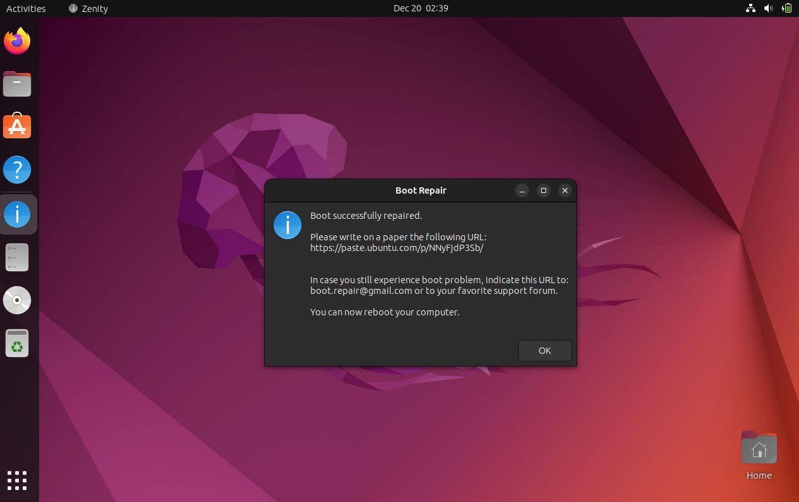
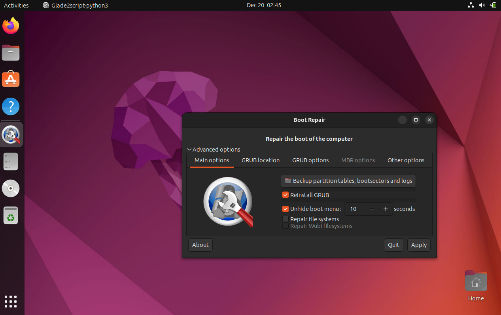

Boot Repair - это инструмент для восстановления и ремонта загрузчика в Ubuntu и других дистрибутивах Linux. Он предназначен для решения проблем с загрузкой системы, включая восстановление GRUB и других компонентов загрузки. Boot Repair создан и поддерживается сообществом разработчиков
Ссылка на сайт прозводителя: ссылка
Ремонт загрузчика GRUB: - Boot Repair специализируется на восстановлении и ремонте загрузчика, особенно GRUB, обеспечивая корректную и стабильную загрузку операционной системы.
Гибкость в настройке параметров загрузки: - Инструмент предоставляет пользовательские опции для настройки параметров загрузки, таких как таймаут и порядок загрузки, что дает пользователю контроль над процессом загрузки.
Диагностика состояния загрузки: - Boot Repair предоставляет диагностическую информацию о текущем состоянии загрузки, что помогает выявлять и устранять проблемы с загрузчиком.
Восстановление загрузчика
Расширенные настройки
Boot Repair предоставляет востребованный функционал как для домашнего, так и для корпоративного использования. Для домашних пользователей инструмент предлагает простое и интуитивное средство восстановления и ремонта загрузчика, что особенно важно при возникновении проблем с загрузкой системы. Удобный пользовательский интерфейс и гибкие настройки параметров делают его доступным даже для тех, кто не обладает глубокими знаниями в области системного администрирования.
В корпоративной среде Boot Repair остается ценным инструментом для быстрого восстановления загрузчика и обеспечения надежной работы системы. Возможности настройки параметров загрузки и поддержка различных сред загрузки делают его гибким решением для различных корпоративных сценариев. Таким образом, Boot Repair представляет собой универсальный инструмент, сочетающий простоту использования с эффективностью в восстановлении загрузочной функциональности.